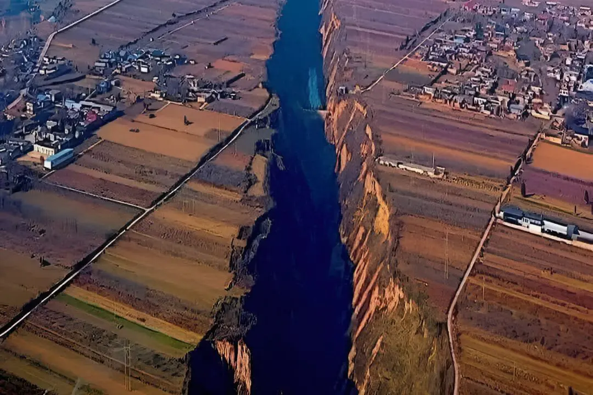
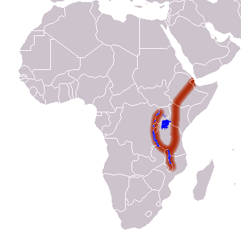
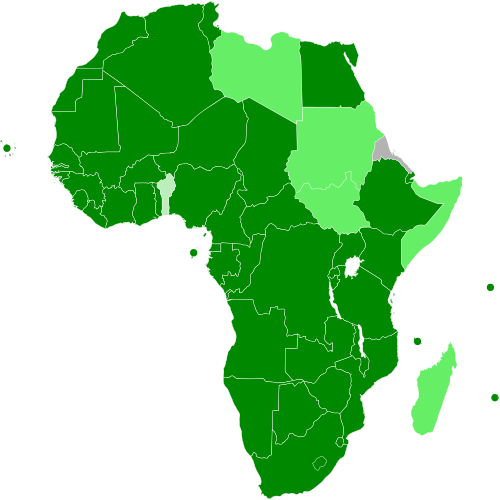

Geografia: A Magnitude dos Contrastes e Platôs


Diferente da América do Sul, dominada por uma grande cordilheira, a África é caracterizada por vastos planaltos e bacias sedimentares. O continente é dividido em cinco grandes regiões, mas geograficamente o Deserto do Saara atua como uma barreira natural entre o norte (Magrebe) e a África Subsaariana.
- O Vale do Rift: No leste africano, uma fenda tectônica colossal está moldando o futuro do continente, criando grandes lagos (como o Vitória e o Tanganica) e montanhas isoladas, como o Kilimanjaro.
- Hidrografia Estratégica: Rios como o Nilo (essencial para a existência do Egito), o Congo (o segundo mais caudaloso do mundo) e o Níger são as artérias que sustentam a agricultura e o potencial hidrelétrico em regiões de savana e floresta tropical densa.
Contexto Socioeconômico: De Celeiro de Minérios a Hub Tecnológico
A economia africana é frequentemente associada à sua riqueza mineral incomensurável, mas o cenário está mudando rapidamente:
- Recursos Críticos: O continente detém a maior parte das reservas mundiais de platina, cobalto (essencial para baterias de carros elétricos) e diamantes, concentrados principalmente na República Democrática do Congo e na África do Sul.
- O "Leão Africano": Economias como Nigéria, Egito, África do Sul e Quênia lideram o crescimento. O Quênia, por exemplo, é um líder global em sistemas de pagamento móvel (M-Pesa), saltando etapas tradicionais de bancarização.
- Demografia e Urbanização: Com a população que mais cresce no mundo, a África terá o maior mercado consumidor e a maior força de trabalho do planeta até o final do século. Lagos (Nigéria) e Kinshasa (RDC) estão se tornando algumas das maiores megacidades do globo.
Geopolítica e Desafios de Integração
O maior marco econômico recente é a ZCLCA (Zona de Comércio Livre Continental Africana), que visa criar o maior mercado comum do mundo desde a criação da OMC. Os desafios, porém, são complexos:
- Infraestrutura: A conexão entre os 54 países ainda é precária, dificultando o comércio intra-africano.
- Legado e Estabilidade A superação de fronteiras artificiais deixadas pelo colonialismo e a busca por estabilidade política em regiões de conflito (como o Sahel) são prioridades para atrair investimentos estrangeiros, especialmente da China e da União Europeia.
